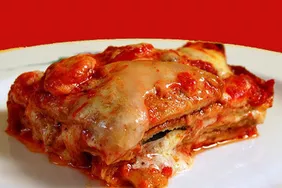

Meat Recipes

Melanzane alla parmigiana is a classic Italian dish from Sicily that's often simply referred to as "parmigiana" by Sicilian locals. The richness and depth of flavor you get from this authentic version is well worth the extra effort. Serve eggplant Parmesan with nothing more than crusty bread and a green salad
Ingredients for Melanzane alla Parmigiana (Eggplant Parmesan)
-
2 cups extra-virgin olive oil, or as needed
-
6 eggplants, trimmed and cut into 1/2-inch thick slices
-
1 bunch fresh basil
-
salt to taste
-
1 ⅓ cups tomato puree (passata)
-
2 tablespoons olive oil, divided
-
2 cloves garlic
-
18 ounces fresh mozzarella cheese, drained and sliced
-
½ teaspoon dried oregano, or to taste
-
4 ounces grated Parmesan cheese
How to Make Melanzane alla Parmigiana (Eggplant Parmesan)
-
Pour 2 cups oil (or amount needed for a depth of 1 inch) into a deep skillet; heat over medium heat.
-
Pat eggplant slices dry with a paper towel. Set aside 4 whole basil leaves; chop remaining leaves.
-
Fry eggplant in batches in hot oil until golden, 2 to 3 minutes per side. Transfer eggplant to a paper towel-lined plate using a slotted spoon; season with salt.
-
Simmer passata, 1 tablespoon olive oil, garlic cloves, 4 basil leaves, and a pinch salt in a saucepan over medium heat for 10 minutes. Remove from the heat and discard garlic cloves.
-
Preheat the oven to 375 degrees F (190 degrees C). Lightly grease a baking dish.
-
Layer ingredients in the baking dish in the following order as many times as possible: fried eggplant, tomato sauce, mozzarella cheese, oregano, Parmesan cheese, and basil leaves. End with a layer of mozzarella and a drizzle of remaining 1 tablespoon olive oil.
-
Bake in the preheated oven until heated through and cheeses are melted, about 40 minutes. Let stand a few minutes before slicing.